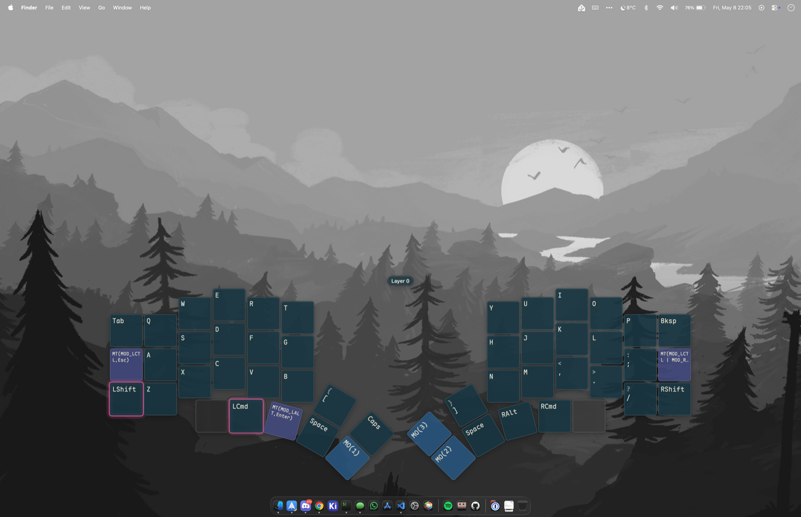

L1 — overlay
The active layer, on screen.
A non-activating panel that floats above your work, fades in on every layer transition, and gets out of your way. Pin it for a live view; let it flash if you only need a glance. Per-board theming, custom labels, your choice of font.
